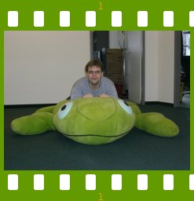

People of openSUSE: Stephan Binner

On this ‘People of openSUSE’ week we interviewed the greatest openSUSE and KDE addict yet. He is also one of the administrators who takes care of both English and German openSUSE wikis and a bunch of other openSUSE related things: Stephan ‘Beineri’ Binner.
- Nickname: Beineri
- Homepage: Not really a homepage: http://en.opensuse.org/User:Beineri
- Blog: http://www.kdedevelopers.org/blog/457
- Favorite season: no animosity against either as long it’s not too wet, hot or cold
- Motto: Have a lot of fun with KDE…
Please introduce yourself!
Born last millennium, more exactly first half of the seventies, in the part of Berlin in which you had to/could pay an entrance fee for a day visit of the other part. Studied computer engineering at the technical university, worked half-time at a research facility along the way. Now living in Nuremberg.
Tell us about the background to your computer use.
First computer experience with Commodore 64 (I remember huge loading times of Ghostbusters). First own computer was an Amiga 500 (first game was Marble Madness). I did some first not worth mentioning programming with AmigaBASIC on it. And with memory extension to 1 MB RAM and second disc drive you could even more play Monkey Island than swapping its floppy disks! I switched over to PC architecture around the time of the Wing Commander series (first CD-ROM game was of course Rebel Assault).
I discovered and explored the Berlin mailbox world with a then insanely expensive ZyXEL 19200 and world wide networks such as UseNet and Gopher via BTX and CompuServe gateways. Later I operated my own mailbox with Fido-Net and own UUCP gateway for some years. It ran first under DR-DOS (the later Novell DOS) and at the end under OS/2 Warp with three lines (one ISDN). During that time I programmed some mailbox software in Turbo Pascal, distributed it as shareware which made me earn some hundred Euros (German marks then) and allowed me to register the mailbox software and plugins I used. So much about my non-free computer software history.
During my studies I maintained the KDE installation on the faculty’s Solaris network (most played day-time game then was XBlast) and started in 2001 to directly contribute to KDE (C++ programming and other stuff). Nowadays the most current hardware I own are all notebooks (and the most played in-the-day game changed to Frozen Bubble as my colleagues never tried XBlast).
When and why did you start using openSUSE/SUSE Linux?
I switched to “S.u.S.E. Linux 5.2” during my studies when my previous distribution didn’t support ELF which I needed for an Opal compiler to be able to do homeworks. The box (which I still have together with nine others versions, sold unfortunately two or three) advertized something called “KDE Beta 3” (a development version of KDE 1.0). This was IIRC my first encounter with KDE and as I never felt comfortable with mwm, twm or fvwm* I started using it.
When did you join the openSUSE community and what made you do that?
At the beginning of August 2005 the first rumors about Novell opening openSUSE to the community existed and were floating around in the #suse IRC channel. But of course I could only really join once it was announced:
[Mon Aug 8 2005] [17:56:37] Join You have joined channel #opensuse. (N=Beineri@kde/binner)
Two or three weeks before I had a job interview at SuSE but nobody hinted me that openSUSE would be coming. One month after openSUSE project announcement I started to work for SuSE Linux Products GmbH.
In what way do you participate in the openSUSE project?
My appointed task is to work on everything KDE related, additionally I’m one of administrators for the German and English wikis, and created and help filling our news site. Also helping a bit with user support on IRC and mailing lists.
What especially motivates you to participate in the openSUSE project?
Giving people a real alternative to MS Windows and their desktop of choice – both for free. Not saying that I don’t like the people working in the openSUSE project but I’m usually more interested in technical aspects.
What do you think was your most important contribution to the openSUSE project/community or what is the contribution that you’re most proud of?
openSUSE News – it’s a great way for the project to get in connection with its users. Except for the users thinking this is a new bug database or a help forum I’m overwhelmed how many people post there eg congratulating on the second birthday and the openSUSE 10.3 release.
When do you usually spend time on the openSUSE project?
During work time, in the evenings, at the week-end – or short: always (I even dreamt of it).
Three words to describe openSUSE? Or make up a proper slogan!
One I entered for the slogan competition was: Linux for Newbies to Professionals
What do you think is missing or underrated in the distribution or the project?
I often think that the documentation for the distribution is underrated or stays unnoticed. We have a team which writes for every release Quick Start and User Guides for both desktops and the comprehensive Reference Guide. But people seem to assume that latter doesn’t exist anymore since it doesn’t get printed for the box anymore despite it being installed by default and being available online.
The project is missing several things: better marketing was already mentioned several time at this place. We need a feature planning which is visible to everyone and allows community submissions. A project government with community involvement is still under way. And we miss procedures/policies and technical realisation how community members can (co)maintain packages – unfortunately it will take quite a while according to the roadmap before the build service will support that.
What do you think the future holds for the openSUSE project?
Continued struggle to get planned stuff done in a not too delayed way. But also people and ideas which nobody has thought of before popping up from nowhere and making a real difference within a short time frame.
A person asks you why he/she should choose openSUSE instead of other distribution/OS. What would be your arguments to convince him/her to pick up openSUSE?
Argument against other major operating systems: it’s free in both senses. And compared to other distributions, openSUSE has with YaST and our KDE tweaks the best system configuration and desktop user experience.
Which members of the openSUSE community have you met in person?
I guess almost everyone who works for or visited SuSE in Nuremberg or were at FOSDEM, LinuxTag, aKademy and some other smaller events during the last two years.
How many icons are currently on your desktop?
The default icons of openSUSE’s KDE desktop and, how embarassing, some downloads dumped there.
What is the application you can’t live without? And why?
Are wildcard answers allowed? The ko* applications fulfill all my daily needs.
Which application or feature should be invented as soon as possible?
An AQAM (automatic questionnaire answer machine).
Which is your preferred text editor? And why?
nano on console, because I got used to pine/pico during university. Kate as GUI editor because of its features and KDE integration (like KIO slaves).
Which famous person would you want to join the openSUSE community?
Does someone know a billionaire who would sponsor sending openSUSE DVDs to everyone?
Which computer related skills would you like to have?
As computer interfaces seem to live more and more from effects and graphics having both profound graphic programming skills and an icon/graphics drawing skills would be useful.
The Internet crashes for a whole week. How would you feel, what would you do?
Would I still have to work? I would be either incredible productive at programming something or would replay all old computer games (though one week would not be sufficient for that).
Which is your favorite movie scene?
The part when after half an hour of waiting the logo of the producing film studio appears.
Star Trek or Star Wars?
I have seen all of the first and most of the second (most noteable missings Deep Space Nine episodes).
And if someone would ask, as companion I would prefer an Ewok over any Tribble amount.
What is your favorite food and drink?
I eat and drink almost everything. I cannot specify one single favorite meal, but as drink: fresh milk.
Favorite game or console (in your childhood and nowadays)?
Adventure games, round-based strategy and construction/management games are my favorites. Never owned a console.
Which city would you like to visit?
Usually I visit cities only because a Linux- or KDE related event is happening there and not because I have to see certain sightseeings.
What is your preferred way to spend your vacation?
The other vacation I spend visiting relatives or small villages often lieing in mountains.
Someone gives you $1.000.000. What would you do with the money?
At first exchange it to Euro before it loses more value. Then maybe as I usually perceive days and week-ends as too short buy some of that rare and valuable resource called time. Either by more vacation or working only four days a week.
If traveling through time was possible, when would we be most likely to meet you?
I guess changing history is not allowed so some time in future when holo decks had their breakthrough.
There’s a thunderstorm outside. Do you turn off your computer?
No, my laptop is covered.
Have your ever missed an appointment because you forgot about it while sitting at your computer?
Don’t think so – or I never heard again from those with whom I was appointed.
Show us a picture of something, you have always wanted to share!
My family sitting on the sofa: http://developer.kde.org/~binner/family.jpg
{kind=link}
You couldn’t live without…
Money, health, peace
Which question was the hardest to answer?
You’re kidding – it’s already over?
What other question would you like to answer? And what would you answer?
“People Behind KDE” had this question I liked: “If you were a KDE app, which one would you be? Why?” I would answer “kded” – serving mostly in the background but without it much would not work.